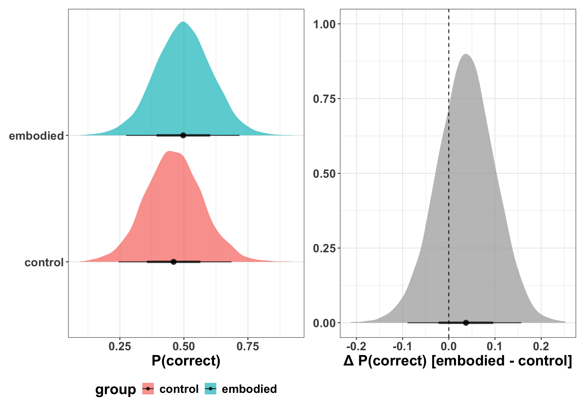

This file uses posterior predictions to make inferences and evaluate hypotheses.
For more details on this kind of workflow for making inferences, I would suggest reading the following:
Statistical rethinking by Richard McElreath (McElreath, 2020). This provides a nice overview of prediction in the context of Bayesian data analysis.
Model to meaning by Vincent Arel-Bundock (Arel-Bundock, 2025), as well as these related journal articles (Arel-Bundock et al., 2024; Rohrer & Arel-Bundock, 2026). These articles provide the intuition and the tools to make it clear why it can often be advantageous to take a model and make predictions in a natural scale that that data were recorded in, rather than parameters in a regression model.
1. Read in the data and models
dat <-read_csv("data/dat.csv",show_col_types =FALSE) |>mutate(group =factor( group,levels =c("control", "embodied") ) )head(dat)
# A tibble: 6 × 5
pid item_id group pre_score_z correct
<chr> <dbl> <fct> <dbl> <dbl>
1 P001 22 control 0.361 1
2 P001 23 control 0.361 1
3 P001 28 control 0.361 0
4 P001 17 control 0.361 1
5 P001 1 control 0.361 0
6 P001 26 control 0.361 1
Family: bernoulli
Links: mu = logit
Formula: correct ~ group + pre_score_z + (1 | pid) + (1 + group | item_id)
Data: dat (Number of observations: 864)
Draws: 4 chains, each with iter = 4000; warmup = 2000; thin = 1;
total post-warmup draws = 8000
Multilevel Hyperparameters:
~item_id (Number of levels: 8)
Estimate Est.Error l-95% CI u-95% CI Rhat Bulk_ESS
sd(Intercept) 1.26 0.38 0.73 2.17 1.00 3077
sd(groupembodied) 0.19 0.16 0.01 0.58 1.00 6573
cor(Intercept,groupembodied) -0.12 0.44 -0.86 0.74 1.00 13550
Tail_ESS
sd(Intercept) 4576
sd(groupembodied) 4954
cor(Intercept,groupembodied) 6384
~pid (Number of levels: 108)
Estimate Est.Error l-95% CI u-95% CI Rhat Bulk_ESS Tail_ESS
sd(Intercept) 1.04 0.15 0.76 1.34 1.00 3713 5535
Regression Coefficients:
Estimate Est.Error l-95% CI u-95% CI Rhat Bulk_ESS Tail_ESS
Intercept -0.16 0.48 -1.13 0.78 1.00 2297 3384
groupembodied 0.16 0.26 -0.37 0.67 1.00 5834 5995
pre_score_z 0.31 0.13 0.06 0.56 1.00 5733 6060
Draws were sampled using sample(hmc). For each parameter, Bulk_ESS
and Tail_ESS are effective sample size measures, and Rhat is the potential
scale reduction factor on split chains (at convergence, Rhat = 1).
2. Calculate posterior predictions
Here we try a simple version, which is the population-average probability for a hypothetical average participant on a hypothetical average item.
nd <-tibble(group =c("control", "embodied"),pre_score_z =0)# all draws per groupepred <- fit_b2 |> tidybayes::add_epred_draws(newdata = nd, re_formula =NA)# difference (all draws)epred_diff <- epred |> tidybayes::compare_levels(.epred, by = group)# plot group epredsplot_epred <- epred |>ggplot(aes(x = .epred, y = group, fill = group)) +stat_halfeye(alpha =0.7) +labs(x ="P(correct)", y =NULL)# plot the differenceplot_diff <- epred_diff |>ggplot(aes(x = .epred)) +stat_halfeye(alpha =0.7) +geom_vline(xintercept =0, linetype ="dashed") +labs(x ="Δ P(correct) [embodied - control]", y =NULL)p1 <- plot_epred | plot_diffp1

# summarise if neededepred |>median_qi(.epred, .width =0.95)
# A tibble: 2 × 9
group pre_score_z .row .epred .lower .upper .width .point .interval
<chr> <dbl> <int> <dbl> <dbl> <dbl> <dbl> <chr> <chr>
1 control 0 1 0.460 0.245 0.686 0.95 median qi
2 embodied 0 2 0.497 0.275 0.717 0.95 median qi
epred_diff |>median_qi(.epred, .width =0.95)
# A tibble: 1 × 8
group pre_score_z .epred .lower .upper .width .point .interval
<chr> <dbl> <dbl> <dbl> <dbl> <dbl> <chr> <chr>
1 embodied - control 0 0.0372 -0.0894 0.157 0.95 median qi
Arel-Bundock, V. (2025). Model to Meaning: How to Interpret Statistical Models with R and Python. CRC Press.
Arel-Bundock, V., Greifer, N., & Heiss, A. (2024). How to Interpret Statistical Models Using marginaleffects for R and Python. Journal of Statistical Software, 111, 1–32. https://doi.org/10.18637/jss.v111.i09
McElreath, R. (2020). Statistical rethinking: A Bayesian course with examples in R and Stan. CRC press.
Rohrer, J. M., & Arel-Bundock, V. (2026). Models as Prediction Machines: How to Convert Confusing Coefficients Into Clear Quantities. Advances in Methods and Practices in Psychological Science, 9(2), 25152459261424825. https://doi.org/10.1177/25152459261424825
Source Code
# Inference {#sec-inference}This file uses posterior predictions to make inferences and evaluate hypotheses.For more details on this kind of workflow for making inferences, I would suggest reading the following:1. [Statistical rethinking](https://xcelab.net/rm/) by Richard McElreath [@mcelreathStatisticalRethinkingBayesian2020]. This provides a nice overview of prediction in the context of Bayesian data analysis.2. [Model to meaning](https://marginaleffects.com/) by Vincent Arel-Bundock [@arel-bundockModelMeaningHow2025], as well as these related journal articles [@arel-bundockHowInterpretStatistical2024; @rohrerModelsPredictionMachines2026]. These articles provide the intuition and the tools to make it clear why it can often be advantageous to take a model and make predictions in a natural scale that that data were recorded in, rather than parameters in a regression model.```{r}#| label: setup#| include: false## load packagespkgs <-c("tidyverse","patchwork","ggdist","brms","bayesplot","tidybayes","parallel","future","furrr")vapply( pkgs, library,logical(1),character.only =TRUE,logical.return =TRUE)## set options## other settingsoptions(brms.backend ="cmdstanr",mc.cores = parallel::detectCores(),future.fork.enable =TRUE#future.rng.onMisuse = "ignore") ## automatically set in RStudiosupportsMulticore()detectCores()# plan(multicore)## use multisession instead of multicore for Stan compatibility on Macplan(multisession, workers =7) ### Set theme for all plotstheme_set(theme_bw() +theme(text =element_text(size =18, face ="bold"),title =element_text(size =18, face ="bold"),legend.position ="bottom" ))```# 1. Read in the data and models```{r}#| label: read-data#| code-fold: falsedat <-read_csv("data/dat.csv",show_col_types =FALSE) |>mutate(group =factor( group,levels =c("control", "embodied") ) )head(dat)# glimpse(dat)# summary(dat)```read models, if already computed```{r}#| label: read-models#| eval: true # always runs — fast#| code-fold: falsefit_b2 <-readRDS("models/fit_b2.rds")summary(fit_b2)```# 2. Calculate posterior predictionsHere we try a simple version, which is the population-average probability for a hypothetical average participant on a hypothetical average item.```{r}#| label: calc-posterior-preds#| code-fold: false nd <-tibble(group =c("control", "embodied"),pre_score_z =0)# all draws per groupepred <- fit_b2 |> tidybayes::add_epred_draws(newdata = nd, re_formula =NA)# difference (all draws)epred_diff <- epred |> tidybayes::compare_levels(.epred, by = group)# plot group epredsplot_epred <- epred |>ggplot(aes(x = .epred, y = group, fill = group)) +stat_halfeye(alpha =0.7) +labs(x ="P(correct)", y =NULL)# plot the differenceplot_diff <- epred_diff |>ggplot(aes(x = .epred)) +stat_halfeye(alpha =0.7) +geom_vline(xintercept =0, linetype ="dashed") +labs(x ="Δ P(correct) [embodied - control]", y =NULL)p1 <- plot_epred | plot_diffp1# summarise if neededepred |>median_qi(.epred, .width =0.95)epred_diff |>median_qi(.epred, .width =0.95)```